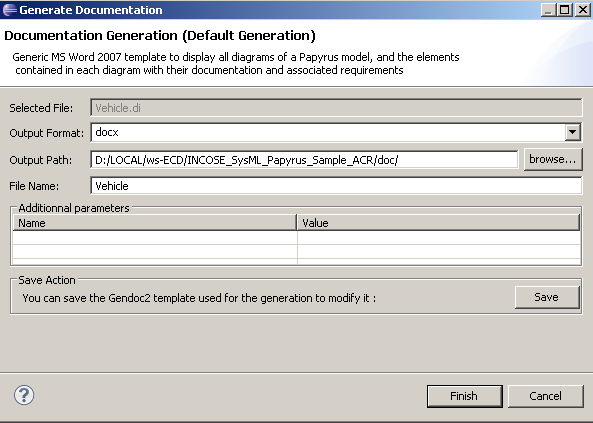
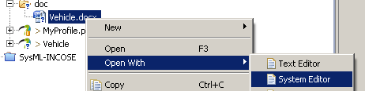

A default simple template is available for any model.
From the Papyrus model, right click > Generate documentation with Gendoc, adjust generation output and OK
Recommendation: use a dedicated "doc" directory.
Refresh project (F5).
Open output doc with System editor.
All diagrams are available with associated documentation. Each element of diagram that has associated documentation is listed in a paragraph with its documentation.
Notes : You have to manually update table of contents.